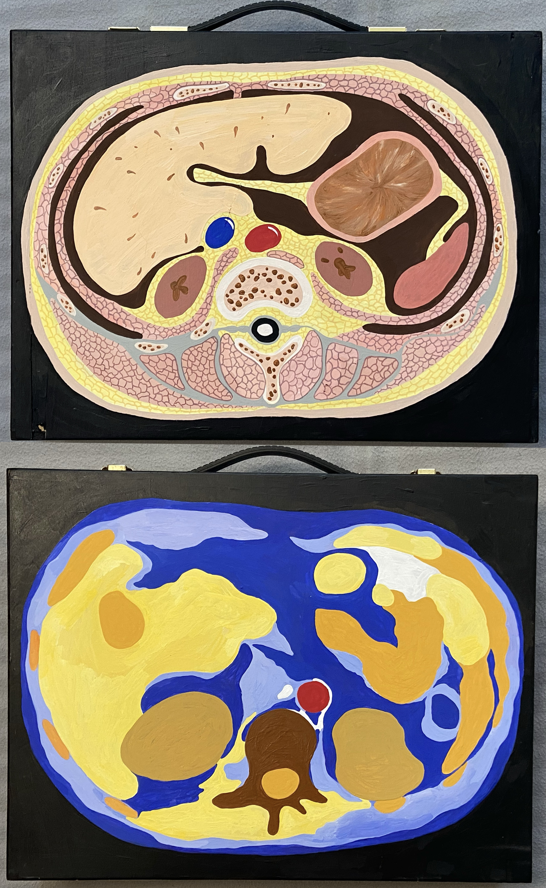
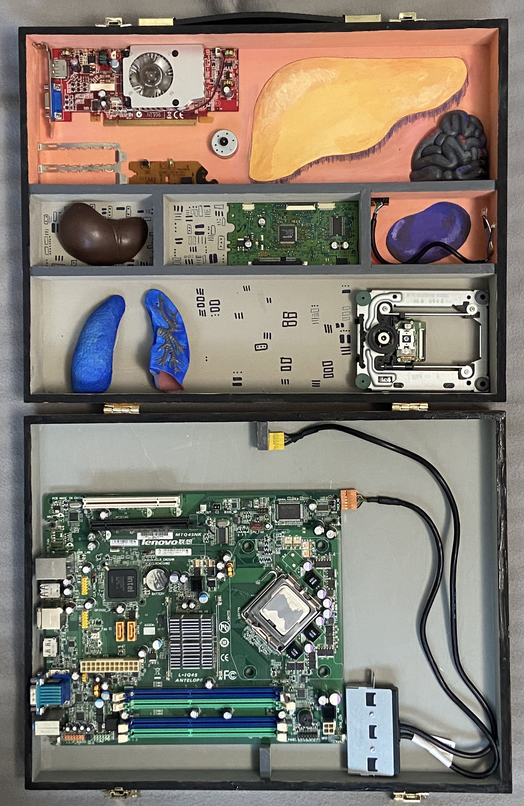
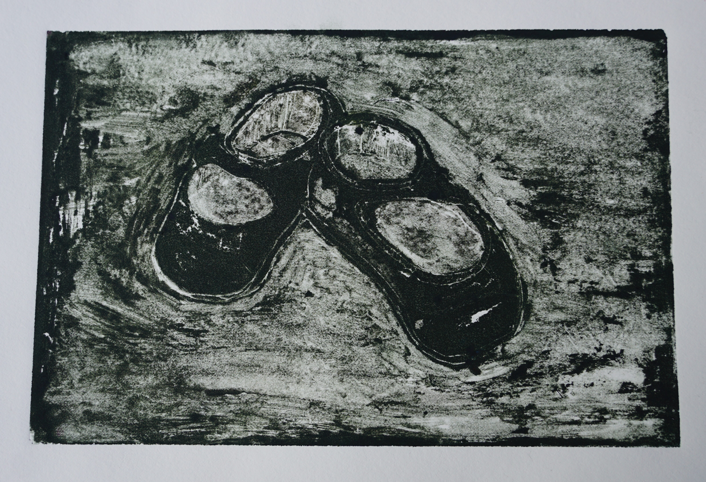
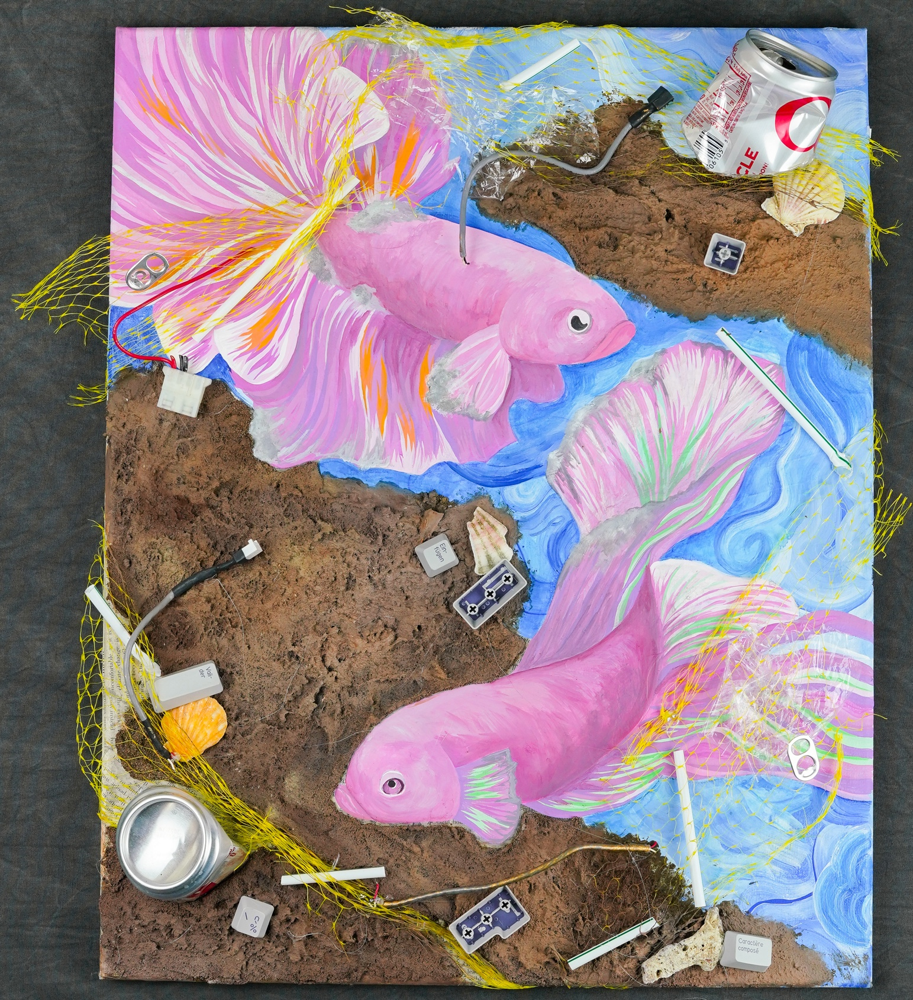
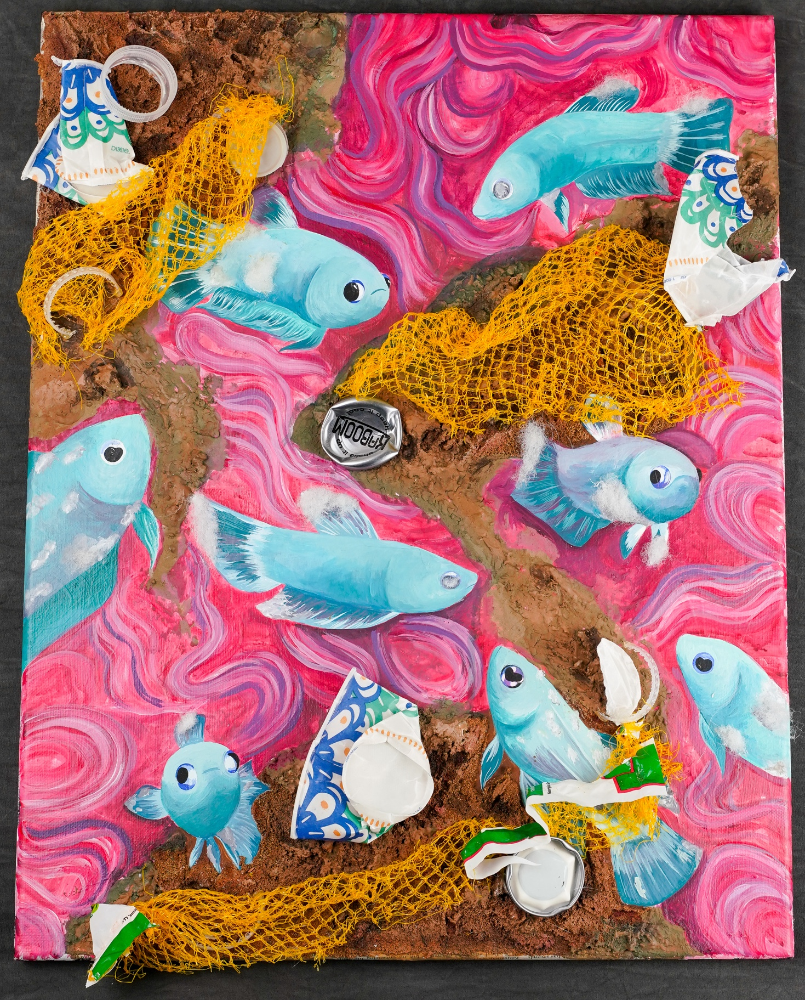
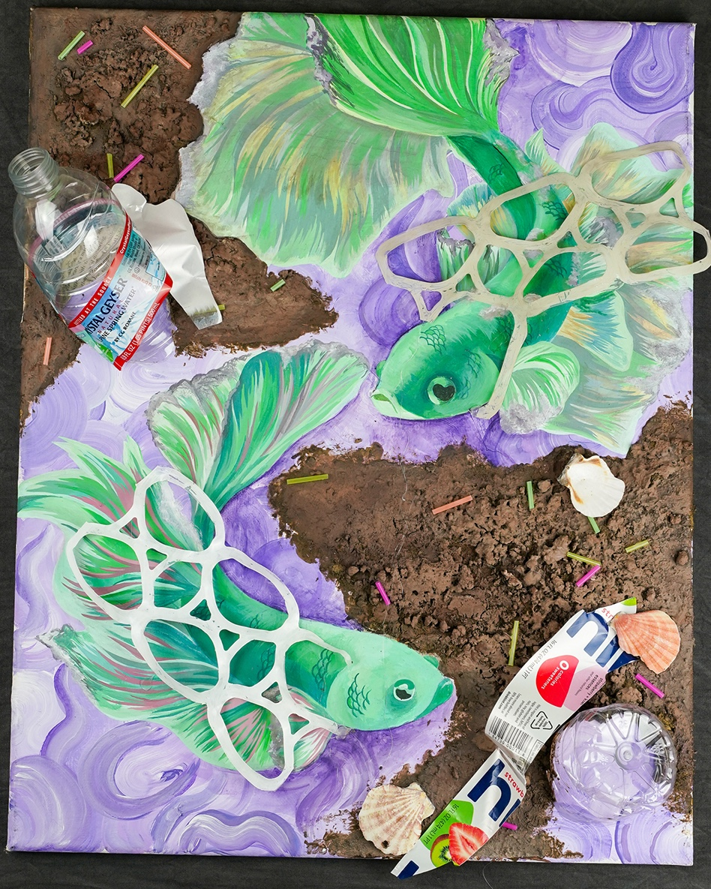
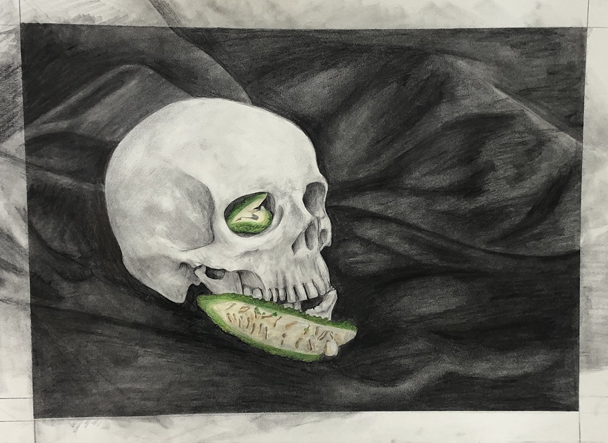
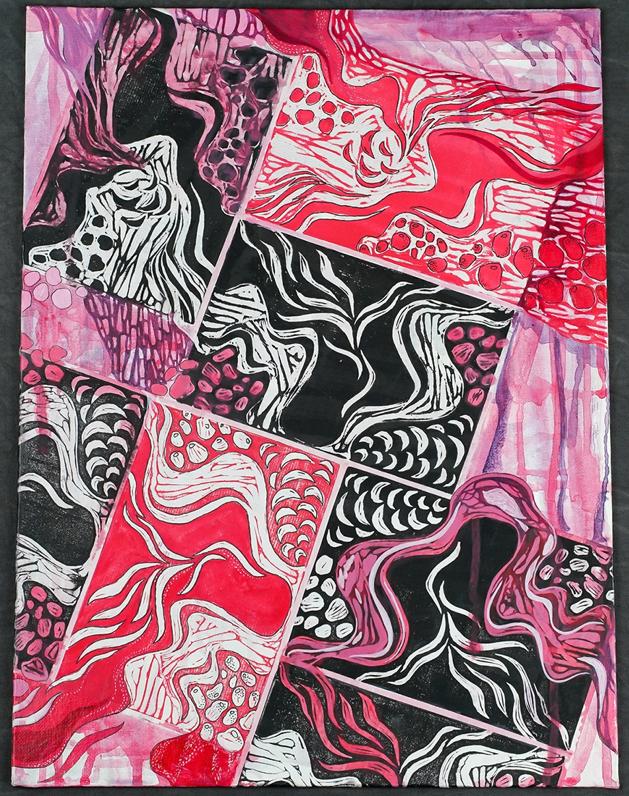
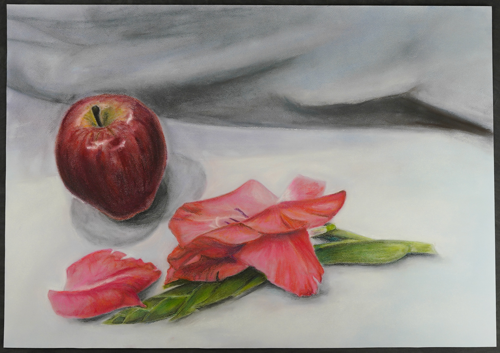

Art Gallery
Drawings, paintings, mixed media + visual experiments.


Perception — 2022

implanted (flesh circuit) — 2022


sorry i left my organs at home i need to go back

Piccola Pantofola (Little Slipper) — 2021



Entangled — 2022

Sicut Et Nos Aetate — 2022

Relief Print — 2022

Untitled — 2021